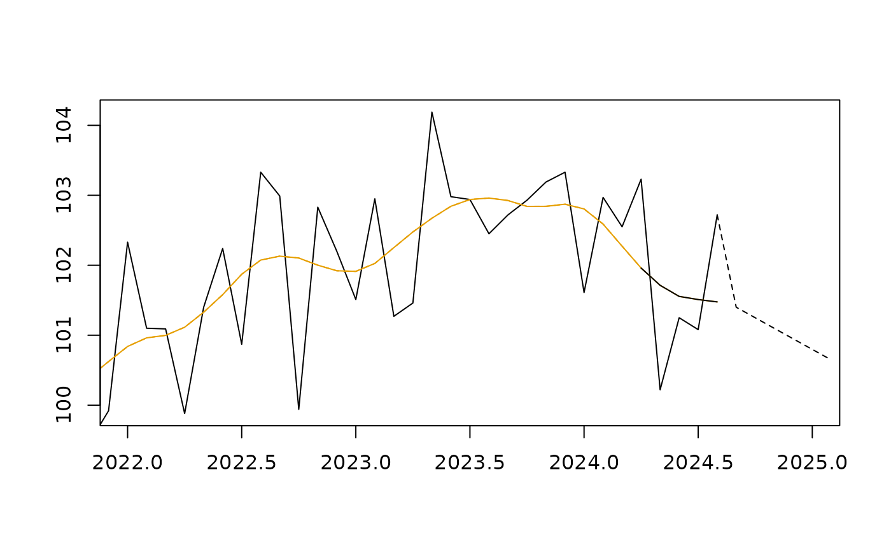

Implicit Forecasts plot
Usage
implicit_forecasts_plot(
object,
xlim = NULL,
ylim = NULL,
col_tc = "#E69F00",
col_sa = "black",
col_i_f = col_sa,
xlab = "",
ylab = "",
lty_last_tc = 2,
lty_i_f = 3,
n_last_tc = 4,
...
)
ggimplicit_forecasts_plot(
object,
xlim = NULL,
ylim = NULL,
col_tc = "#E69F00",
col_sa = "black",
col_i_f = col_sa,
lty_last_tc = 2,
lty_i_f = 3,
n_last_tc = 4,
legend_tc = "Trend-cycle",
legend_sa = "Seasonally adjusted",
legend_i_f = "Implicit forecasts",
...
)Arguments
- object
"tc_estimates"object.- xlim, ylim
x and y limits of the plot. If
xlimis defined and notylim, thenylimis determined automatically.- col_sa, col_tc
color of the seasonally adjusted and trend-cycle components.
- col_i_f
color of the implicit forecasts.
- xlab, ylab
x and y axis labels.
- lty_last_tc, lty_i_f
line type of the last values of the trend-cycle component and for the implicit forecasts.
- n_last_tc
number of last values of the trend-cycle component to be plotted with a different line type (to emphasize that there is higher variability for the last estimates). If
NULL, thenn_last_tcis equal to the bandwidth of the trend-cycle component.- ...
other parameters.
- legend_tc, legend_sa, legend_i_f
legend of the trend-cycle and seasonally adjusted components and for implicit forecasts.
Examples
tc_mod <- henderson_smoothing(french_ipi[, "manufacturing"])
implicit_forecasts_plot(tc_mod, xlim = c(2022, 2025))
